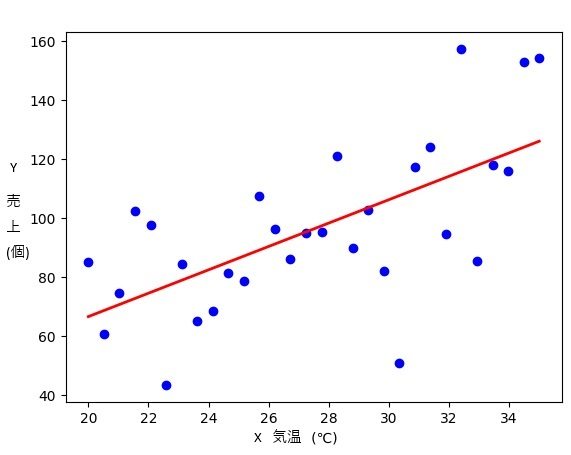

プログラミング講座 第14.2回
第14.2回の目標：プログラミングを通してデータの分析について理解を深める。
1.回帰直線
2つのデータの関係を調べる際、予測に用いられる方を表す変数Xを独立変数、予測される方を表す変数Yを従属変数という。
Xが原因、Yが結果を表すと思ってもよい。
例えば気温とアイスクリームの売上の関係を調べたいとすると、気温(原因)によるアイスクリームの売上(結果)を調べることであるから、気温をX(独立変数)、売上をY(従属変数)とする。
XとYの関係を表す近似直線を回帰直線という。
回帰直線を求めることは、XからYをどう予測できるのか、というXとYの関係のモデルを作ることに他ならない。
以降で、回帰直線を計算するプログラムを作ってみよう。ただし、実用的な方法ではなく、各データと高校生がよく知っている \( y=ax+b \) の直線がどれくらい近いかを地道に計算する方法でやってみる。
2.残差
データの実際の値と回帰直線による予測値との差を残差という。下図のイメージである。

プラスの差とマイナスの差が打ち消されないように残差の2乗を扱う。
回帰直線とは残差の2乗の和が最小になるような近似直線である。
例題1 パラメータとしてx_0, y_0, \( a \), \( b \) を引き受け、データ(x_0, y_0)と \( y=ax+b \) から予測される値の残差の2乗を返す関数zansaSquareを定義せよ
ここで扱うデータはオブジェクトの配列とする。各オブジェクトはxプロパティとyプロパティを持つ。
const mydata = [{x:20,y:22},
{x:20,y:26},
{x:17,y:17},
・・・
これを扱うには以下のようにする。
let i;
for (i = 0; i < mydata.length; i++) {
mydata[i].x と mydata[i].y を使って計算する
}
・・・
各データと回帰直線 \( y=ax+b \) から残差の2乗の和を計算する。\( a \) と \( b \) を少しずつ変えて、繰り返し残差の2乗の和を計算し、それが最小になるような \( a \) と \( b \) を回帰直線の係数として採用することにする。
例題2 各データはmydata配列に格納されているとする。例題1が完成しているとし、zansaSquareを用いて回帰直線 \( y=ax+b \) の係数 \( a \) と \( b \) にふさわしい値を返す関数myPredictを定義せよ。ただし、\( a \) 、\( b \) はそれぞれ0.1から4まで0.01ずつ大きくして計算せよ。
なお、例えば \( a=1.2 \) と \( b=1.8 \) を返すには以下のようにする。
function myPredict() {
・・・
return { a : 1.2,
b : 1.8 };
}